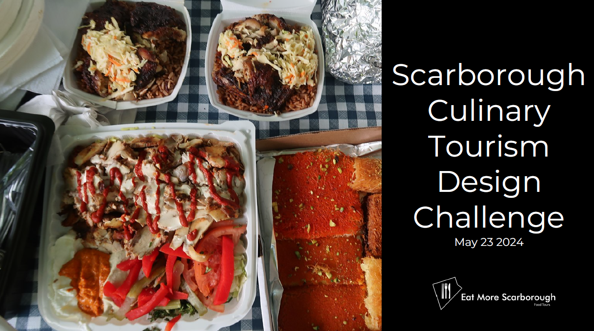

Scarborough Food Tour Design Challenge

1. Skills Gained
Problem Analsis through Storyboarding, Field Research, Ideation
through tools such as SCAMPER, Yes, and?, Prototyping, Idea
Evaluation through ROGERS, Storytelling using the
Character > Conflict > Conclusion format
2. The Project
As part of my Creative Thinking for Business Innovation class we had
a hackathon style design challenge from our client Scarborough Food
Tours, which we had less than 24 hours to solve.
3. The Problem
4. Design Process
5. Segmentation
All potential customers were considered such as Tourists from
outside who heard of hub, Tourists staying in Scarborough, Corporate
groups traveling to GTA for work, Residents of Toronto looking to
explore new places, People who enjoy food history and experience,
Families, Students, Immigrants looking for new places, before
deciding on the target segment to focus on.
6. Field Research
7. Observations and Insights
From the field research, I listed all our observations and sorted
them into themes we could identify, to come up with insights for
customer needs.
7. Problem Statement
From the customer needs identified, the problem statement was
redefined as below:
8. Ideation
SCAMPER: What is SCAMPER?
Using the SCAMPER tool, I generated a bunch of ideas as below.
9. Prototype
Narrowing down the solution, the idea I focused on was to design a
food tour experience that is gamified on a no-code application.
Elaborating on this idea using the improv method of “Yes, and?” ,
the grew to a journey where the customer can win souvenirs, view
information on their food guide including ratings and languages, and
points that give them a free gift at the end of the tour. The client
could partner with the local restaurants to dedicate one of their
employees to attend to tourists, and retrain the employee,
eliminating the need for tour guides, create a review and rating
system on app to review the restaurant service.
10. Idea Evaluation
ROGERS 5 Factor method was used to evaluate the idea. This is a tool
from innovation diffusion studies across multiple areas, E. Rogers
discovered five characteristics of successful adoption (consumption)
of new ideas: High relative advantage, Compatibility, Low
complexity, Trialability, Observability.
11. Customer Roadmap
This is a roadmap we created for our customer with their food tour
map. it first provides customers with instructions on how they can
get started with their journey. The first restaurant icon is the
first stop you visit. when you click in, it will show you fun facts
about the restaurant's cultural background about the food.
everything you need to know beforehand. on your way to the next
restaurant we will be visiting, along the way, it will also show you
any good views or photo spots. just to make the journey more
entertaining, if the customers are interested, they can post.
12. Synthesize
Elevator Pitch: “Ever had to play for your next meal”?
13. Storytelling
Storytelling using the
Character > Conflict > Conclusion format
14. Outcome
The solution was presented in-person to to the sponsoring company
and the feedback received was that the client had not thought of the
game idea and the prototype was very well developed. The idea also
won 3rd place in the people's choice award among other participants.